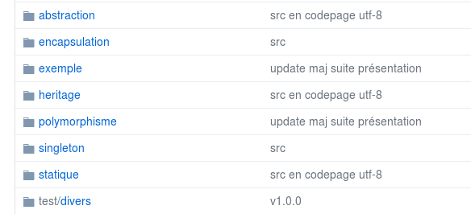

Landing-page du projet PassTech réalisé en juin 2018. avec Github-page, Webpack et Sass pour le Front, la charte graphique respecte les normes du framework Material Design de google.
Refonte du site officiel du bootcamp The Hacking Project réalisé en janvier 2018 avec Ruby On Rails et utilisant pour le front le kit responsive Now UI (basé sur Bootstrap 4).
JavaScript : Projet Lonepod réalisé dans le cadre du Hackacon Paris, les 10&11 juin 2017 au Tank
Tuto installation et première prise en main du builder Maven pour Java
Notions de bases, fondamentaux de la POO, capture d'écran du github privé de Simplon.co : 
Le repository de cette page et mon compte Github sont disponibles en cliquant ici